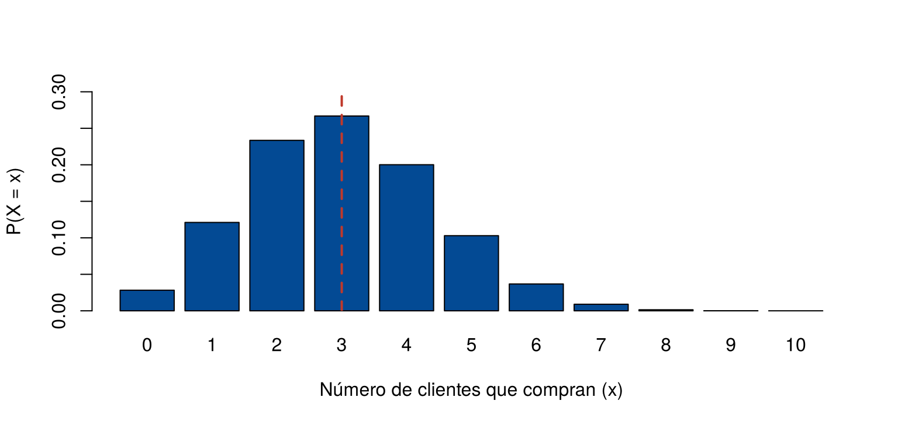
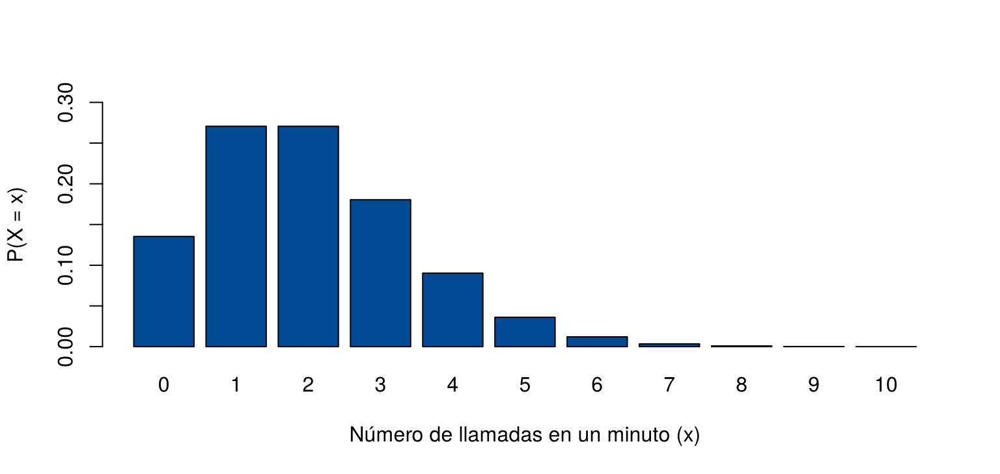

Muchas variables discretas aparecen una y otra vez en situaciones distintas: el número de clientes que compran entre los que reciben una oferta, el número de llamadas que llegan en una hora, el número de defectuosos en una muestra. Para estas situaciones ya existen modelos de probabilidad con fórmulas conocidas para su función de probabilidad, su valor esperado y su varianza.
Esta página presenta seis modelos discretos: Bernoulli, binomial, Poisson, hipergeométrico, geométrico y binomial negativo. Para cada uno se explica cuándo se usa, sus fórmulas y cómo calcular probabilidades en R. Los bloques de código se ejecutan en orden.
Para cada modelo, R tiene cuatro funciones. Sus nombres empiezan con una letra que indica qué calculan, seguida del nombre del modelo:
| Letra | Qué calcula | Ejemplo con la binomial |
|---|---|---|
d |
La función de probabilidad, \(P(X = x)\) | dbinom(3, size = 10, prob = 0.3) |
p |
La función de distribución acumulada, \(P(X \leq x)\) | pbinom(3, size = 10, prob = 0.3) |
q |
El cuantil: el menor valor \(x\) con \(P(X \leq x) \geq\) una probabilidad dada | qbinom(0.5, size = 10, prob = 0.3) |
r |
Valores simulados al azar | rbinom(100, size = 10, prob = 0.3) |
Un ensayo de Bernoulli es un experimento con solo dos resultados: éxito, con probabilidad \(p\), y fracaso, con probabilidad \(1 - p\). La variable \(X\) vale 1 si hay éxito y 0 si hay fracaso:
\[ P(X = 1) = p, \qquad P(X = 0) = 1 - p \]
\[ E(X) = p, \qquad \text{Var}(X) = p\,(1 - p) \]
Ejemplos: un cliente compra o no compra, una pieza es defectuosa o no, un paciente responde o no a un tratamiento. La palabra “éxito” solo indica el resultado que se cuenta, aunque no sea algo bueno: en control de calidad, el “éxito” puede ser encontrar una pieza defectuosa.
El modelo de Bernoulli es la pieza con la que se construyen los demás modelos de esta página.
Se repite un ensayo de Bernoulli \(n\) veces, de forma independiente y con la misma probabilidad de éxito \(p\). La variable \(X\) es el número de éxitos en los \(n\) ensayos. Se escribe \(X \sim \text{Bin}(n, p)\).
\[ P(X = x) = \binom{n}{x} p^x (1 - p)^{n - x}, \qquad x = 0, 1, \ldots, n \]
\[ E(X) = n\,p, \qquad \text{Var}(X) = n\,p\,(1 - p) \]
El número \(\binom{n}{x}\) cuenta de
cuántas formas se pueden ubicar los \(x\) éxitos entre los \(n\) ensayos; en R se
calcula con choose(n, x).
Una tienda sabe que el 30 % de los clientes que reciben una oferta compran. Envía la oferta a 10 clientes, que deciden de forma independiente. El número de clientes que compran es \(X \sim \text{Bin}(10, 0.3)\).
x <- 0:10
fx <- dbinom(x, size = 10, prob = 0.3)
pos <- barplot(fx, names.arg = x, col = "#034A94", ylim = c(0, 0.3),
xlab = "Número de clientes que compran (x)", ylab = "P(X = x)")
abline(v = pos[4], col = "#C0392B", lwd = 2, lty = 2) # x = 3 es la cuarta barra
Función de probabilidad de X ~ Bin(10, 0.3). La línea roja marca el valor esperado, 3.
dbinom(3, 10, 0.3) # P(X = 3): exactamente 3 compran[1] 0.2668279pbinom(2, 10, 0.3) # P(X <= 2): a lo sumo 2 compran[1] 0.38278281 - pbinom(4, 10, 0.3) # P(X >= 5): al menos 5 compran[1] 0.1502683c(media = 10 * 0.3, varianza = 10 * 0.3 * 0.7) media varianza
3.0 2.1 La probabilidad de que compren exactamente 3 clientes es 0.267. En promedio compran 3 de cada 10.
Una simulación ayuda a interpretar estos números. Se repite el envío
a 10 clientes 1 000 veces con
rbinom():
set.seed(2026)
envios <- rbinom(1000, size = 10, prob = 0.3)
mean(envios) # promedio de compradores por envío, cerca de 3[1] 2.981mean(envios == 3) # proporción de envíos con exactamente 3 compradores, cerca de 0.267[1] 0.262En cerca del 26.7 % de los envíos compran exactamente 3 clientes, y el promedio de compradores se acerca a 3.
El modelo de Poisson describe el número de eventos que ocurren en un intervalo de tiempo o de espacio, cuando los eventos ocurren al azar, de forma independiente y con un promedio constante \(\lambda\) por intervalo. Se escribe \(X \sim \text{Poisson}(\lambda)\).
\[ P(X = x) = \frac{e^{-\lambda}\,\lambda^x}{x!}, \qquad x = 0, 1, 2, \ldots \]
\[ E(X) = \lambda, \qquad \text{Var}(X) = \lambda \]
Ejemplos: llamadas que llegan a un centro de atención en una hora, accidentes en una vía en un mes, errores de digitación por página. A diferencia de la binomial, no hay un número máximo de eventos.
A un centro de atención llegan en promedio 2 llamadas por minuto. El número de llamadas en un minuto es \(X \sim \text{Poisson}(2)\).
x <- 0:10
fx <- dpois(x, lambda = 2)
barplot(fx, names.arg = x, col = "#034A94", ylim = c(0, 0.3),
xlab = "Número de llamadas en un minuto (x)", ylab = "P(X = x)")
Función de probabilidad de X ~ Poisson(2).
dpois(0, lambda = 2) # P(X = 0): ninguna llamada en un minuto[1] 0.1353353ppois(2, lambda = 2) # P(X <= 2)[1] 0.67667641 - ppois(3, lambda = 2) # P(X >= 4): 4 o más llamadas[1] 0.1428765Si el centro puede atender hasta 3 llamadas por minuto, en el 14.3 % de los minutos llegarán más llamadas de las que puede atender.
Si el intervalo cambia, el promedio cambia en la misma proporción. En 5 minutos llegan en promedio \(5 \times 2 = 10\) llamadas, así que el número de llamadas en 5 minutos es \(\text{Poisson}(10)\).
En el gráfico interactivo puede elegir el modelo, mover sus parámetros y un valor \(k\). El gráfico muestra la función de probabilidad, y a la izquierda aparecen \(P(X = k)\), \(P(X \leq k)\), \(P(X > k)\), el valor esperado y la varianza. Pruebe, por ejemplo, qué pasa con la forma de la binomial cuando \(p\) se acerca a 0.5, o con la Poisson cuando \(\lambda\) crece.
Los valores del gráfico coinciden con los de R. Por
ejemplo, con la binomial de \(n = 10\)
y \(p = 0.3\) y con \(k = 3\), el gráfico muestra \(P(X = 3) = 0.2668\), el mismo valor de
dbinom(3, 10, 0.3).
Se toma una muestra sin reemplazo de una población pequeña que tiene \(m\) éxitos y \(n\) fracasos. La variable \(X\) es el número de éxitos en la muestra de tamaño \(k\).
\[ P(X = x) = \frac{\binom{m}{x}\binom{n}{k - x}}{\binom{m + n}{k}} \]
\[ E(X) = k\,\frac{m}{m + n} \]
La diferencia con la binomial es que, al no haber reemplazo, la probabilidad de éxito cambia en cada extracción, como en la regla de la multiplicación de Tipos de probabilidad. Si la población es muy grande comparada con la muestra, el cambio es mínimo y la binomial es una buena aproximación.
Un lote tiene 20 productos, de los cuales 5 son defectuosos. Un
inspector toma 4 al azar, sin reemplazo. En R,
dhyper(x, m, n, k) usa \(m =
5\) defectuosos, \(n = 15\)
buenos y \(k = 4\) en la muestra:
x <- 0:4
fx <- dhyper(x, m = 5, n = 15, k = 4)
round(data.frame(x, fx), 4) x fx
1 0 0.2817
2 1 0.4696
3 2 0.2167
4 3 0.0310
5 4 0.00101 - dhyper(0, m = 5, n = 15, k = 4) # P(X >= 1): al menos un defectuoso[1] 0.71826634 * 5 / 20 # E(X)[1] 1La probabilidad de que la muestra no tenga defectuosos es 0.282: en más de una de cada cuatro inspecciones, un lote con 25 % de defectuosos pasaría sin que se detecte ninguno.
Se repiten ensayos de Bernoulli independientes con probabilidad de éxito \(p\) hasta obtener el primer éxito. Hay dos formas de contar, y conviene no confundirlas:
| Variable | Valores | \(P(X = x)\) | \(E(X)\) |
|---|---|---|---|
| Número de fracasos antes del primer éxito (la que usa R) | \(0, 1, 2, \ldots\) | \((1 - p)^x\,p\) | \(\dfrac{1 - p}{p}\) |
| Número de ensayos hasta el primer éxito | \(1, 2, 3, \ldots\) | \((1 - p)^{x - 1}\,p\) | \(\dfrac{1}{p}\) |
Las dos tienen la misma varianza, \(\dfrac{1 - p}{p^2}\). Los ensayos son siempre uno más que los fracasos.
Un vendedor cierra una venta en el 20 % de sus llamadas. ¿Cuál es la probabilidad de que su primera venta sea en la tercera llamada? Eso significa 2 fracasos antes del primer éxito:
\[ P(\text{primera venta en la llamada 3}) = 0.8^2 \times 0.2 = 0.128 \]
dgeom(2, prob = 0.2) # 2 fracasos y luego el éxito[1] 0.128pgeom(4, prob = 0.2) # P(a lo sumo 4 fracasos) = P(vende en las primeras 5 llamadas)[1] 0.67232(1 - 0.2) / 0.2 # fracasos esperados antes de la primera venta[1] 41 / 0.2 # llamadas esperadas hasta la primera venta[1] 5En promedio, el vendedor necesita 5 llamadas para hacer su primera venta.
Es la generalización del geométrico: se repiten ensayos hasta obtener \(r\) éxitos. En R, la variable es el número de fracasos antes del éxito número \(r\):
\[ P(X = x) = \binom{x + r - 1}{x}\,p^r (1 - p)^x, \qquad x = 0, 1, 2, \ldots \]
\[ E(X) = \frac{r\,(1 - p)}{p}, \qquad \text{Var}(X) = \frac{r\,(1 - p)}{p^2} \]
Con \(r = 1\) se obtiene el modelo geométrico.
Siguiendo con el vendedor, ¿cuál es la probabilidad de que necesite exactamente 8 llamadas para hacer 3 ventas? Eso es 5 fracasos antes de la tercera venta:
dnbinom(5, size = 3, prob = 0.2) # 5 fracasos antes de la tercera venta[1] 0.055050243 * (1 - 0.2) / 0.2 # fracasos esperados antes de la tercera venta[1] 12En promedio, tendrá 12 llamadas sin venta antes de completar 3 ventas, es decir, unas 15 llamadas en total.
| Modelo | Qué cuenta | Parámetros | \(E(X)\) | Funciones en R |
|---|---|---|---|---|
| Bernoulli | Éxito (1) o fracaso (0) en un ensayo | \(p\) | \(p\) | dbinom(x, 1, p) |
| Binomial | Éxitos en \(n\) ensayos independientes | \(n\), \(p\) | \(np\) | dbinom, pbinom,
qbinom, rbinom |
| Poisson | Eventos en un intervalo | \(\lambda\) | \(\lambda\) | dpois, ppois,
qpois, rpois |
| Hipergeométrico | Éxitos en una muestra sin reemplazo | \(m\), \(n\), \(k\) | \(\dfrac{km}{m + n}\) | dhyper, phyper,
qhyper, rhyper |
| Geométrico | Fracasos antes del primer éxito | \(p\) | \(\dfrac{1 - p}{p}\) | dgeom, pgeom,
qgeom, rgeom |
| Binomial negativo | Fracasos antes del éxito número \(r\) | \(r\), \(p\) | \(\dfrac{r(1 - p)}{p}\) | dnbinom, pnbinom,
qnbinom, rnbinom |
| Problema | Causa | Solución |
|---|---|---|
\(P(X \geq 5)\)
calculado como 1 - pbinom(5, ...) |
pbinom(5, ...) incluye el 5 |
Usar 1 - pbinom(4, ...) |
| Usar la binomial en un muestreo sin reemplazo de una población pequeña | La probabilidad de éxito cambia en cada extracción | Usar la hipergeométrica |
Usar dgeom(3, p) para “el primer éxito en
el tercer ensayo” |
dgeom() cuenta fracasos, no ensayos |
Usar dgeom(2, p) |
| No ajustar \(\lambda\) al cambiar el intervalo | \(\lambda\) es el promedio por intervalo | Si el intervalo se multiplica por \(t\), usar \(\lambda t\) |
| Usar la binomial con ensayos que no son independientes o con \(p\) que cambia | No se revisaron los supuestos | Verificar ensayos independientes con la misma \(p\) |
Un examen tiene 20 preguntas con 4 opciones cada una. Un estudiante responde todas al azar. ¿Cuál es la probabilidad de que acierte al menos 10? ¿Cuántas acierta en promedio?
\(X \sim \text{Bin}(20, 0.25)\).
1 - pbinom(9, size = 20, prob = 0.25) # P(X >= 10)[1] 0.0138644220 * 0.25 # E(X)[1] 5La probabilidad de acertar al menos 10 es 0.014. En promedio acierta 5.
A un cajero llegan en promedio 12 clientes por hora. ¿Cuál es la probabilidad de que en 15 minutos lleguen más de 5 clientes?
En 15 minutos, \(\lambda = 12 / 4 = 3\).
1 - ppois(5, lambda = 3)[1] 0.08391794La probabilidad es 0.084.
De un curso de 30 estudiantes, 12 son de ingeniería. Se elige al azar un comité de 5. Calcule la probabilidad de que haya exactamente 2 estudiantes de ingeniería con la hipergeométrica y compárela con la binomial. ¿Por qué difieren?
dhyper(2, m = 12, n = 18, k = 5) # sin reemplazo[1] 0.3779209dbinom(2, size = 5, prob = 12/30) # como si fuera con reemplazo[1] 0.3456La hipergeométrica da 0.378 y la binomial, 0.346. Difieren porque el curso es pequeño: cada estudiante elegido cambia la proporción de los que quedan.
Una máquina produce piezas defectuosas con probabilidad 0.05, de forma independiente. ¿Cuál es la probabilidad de que la primera pieza defectuosa sea una de las primeras 10? ¿Cuántas piezas buenas se esperan antes de la primera defectuosa?
“Entre las primeras 10” significa a lo sumo 9 piezas buenas antes de la defectuosa.
pgeom(9, prob = 0.05) # P(a lo sumo 9 fracasos)[1] 0.4012631(1 - 0.05) / 0.05 # piezas buenas esperadas[1] 19La probabilidad es 0.401, y se esperan 19 piezas buenas antes de la primera defectuosa.
?Binomial, ?Poisson,
?Hypergeometric, ?Geometric,
?NegBinomial).Última revisión: 7 de noviembre de 2026.